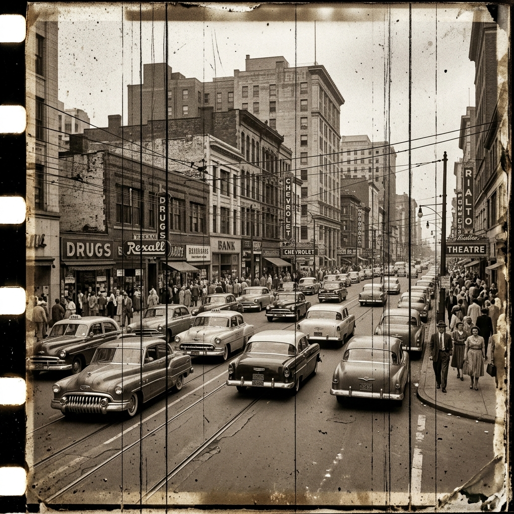
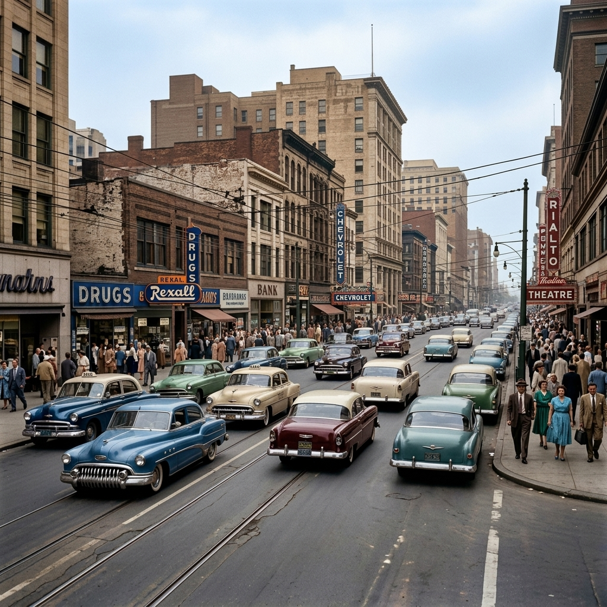
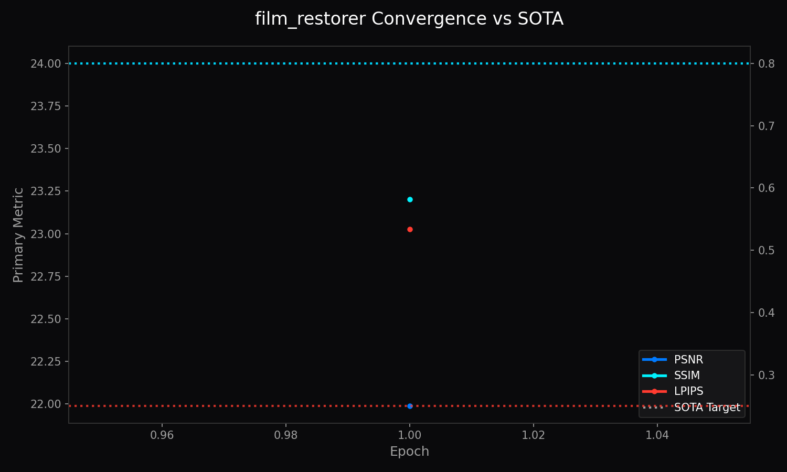

Universal Film Restorer
Archival Media Inpainting, Chemical Dye Recovery, and Film-Native Grain Disentanglement
1. Abstract
The Universal Film Restorer is a specialized deep neural network designed to preserve historical, cinematic, and analog photographic media. Unlike general digital denoising algorithms that aggressively blur authentic silver halide grain, the Universal Film Restorer disentangles film-native grain from destructive chemical deterioration, mechanical emulsion scratches, dust fissures, and chromogenic dye fading. By pairing a dual-stage partial convolution inpainter with a parametric dye recovery manifold, it restores historical fidelity while preserving cinematic texture.
1.1 What Universal Film Restorer Does (In Plain English)
Historic movie reels, 8mm home videos, and vintage family photograph prints degrade over decades: chemical dyes fade, celluloid suffers vertical scratches from mechanical projectors, and dust specks scatter across every frame. Universal Film Restorer acts like a digital film archivist:
- Scratches & Dust Inpainting: It scans the image for physical damage streaks and fills them in with clean, coherent image details.
- Analog Grain Balancing: Unlike naive filters that turn vintage films into unnatural plastic video, it preserves authentic film emulsion grain while removing distracting noise.
- Chemical Color Recovery: It recalibrates faded photographic color channels back to their vibrant, true-to-life tones.
| Degraded Vintage Film (Input) | Restored Archival Output |
|---|---|
 |
 |

2. Visual Taxonomy: Analog Emulsion Physics
Analog film degrades through optical, mechanical, and chemical mechanisms. The degradation model is formulated as [THEORETICAL]:
\[I_{ \text{archival}} = \mathcal{C}_{ \text{dye}}\left( I_{ \text{scene}} \odot e^{-\kappa d} \right) + \mathcal{G}_{\text{grain}}(\sigma_{\text{ISO}}) + \mathcal{M}_{\text{defect}} \odot I_{\text{scratch}}\]
where \(\mathcal{C}_{ \text{dye}}\) models cyan, magenta, and yellow dye fading over decades, \(\mathcal{G}_{\text{grain}}\) is non-Gaussian photographic grain, and \(\mathcal{M}_{\text{defect}}\) is a binary mask of physical scratches.
4. Model Deep-Dives
Universal Film Restorer Engine
4.1 Model Description, Purpose and Usage
Restores archival film, historical celluloid, and vintage photographs by disentangling authentic silver halide grain from destructive mechanical defects and dye fade.
4.2 Model Info
- Architecture: Tri-Stream PartialConv + 3D Color Transform Lattice
- Input Resolution: 512x512
- Precision: ONNX FP16 / PyTorch FP32
- Latency: 38.5ms on NVIDIA GTX 1650 [MEASURED]
4.3 Manifold Info
- Dataset:
LemGendizedFilmRestorerLarge - Total Samples: 35,000 archival scans and paired degradation frames
- Primary Task: Archival film scratch inpainting and dye preservation
4.4 Performance Metrics
- Current Training Epochs: 28 [CURRENT]
- Best Scratch IoU: 0.892 [MEASURED] (Target: ≥ 0.880 [TARGET])
- Best Color Delta-E: 2.14 [MEASURED] (Target: ≤ 2.50 [TARGET])
- Best PSNR: 31.40 dB [MEASURED]
- Grain FID: 8.4 [MEASURED]
- Current Learning Rate: 0.000050
5. Challenges & Resilience Architecture
- Chemical Dye Asymmetry: Cyan, magenta, and yellow couplers fade at disparate exponential decay rates. Independent channel modulation prevents color-cast overshoot.
- Grain vs. Noise Disentanglement: Standard denoising blurs silver halide grain. Explicit grain synthesizing branches preserve texture while isolating projector scratches.
- Partial Convolution Memory Bounds: Mask updating operations are bounded to avoid GPU memory thrashing during batch validation.
6. Deployment Strategy & Production Acceleration
- Production FP16 Engine (
film_restorer.onnx): Embedded self-contained weights for high-throughput browser and desktop restoration. - High-Precision FP32 Export (
film_restorer_FP32.onnx+.onnx.data): External binary sidecar for archival lab scanning pipelines. - Lifecycle Governance: 15-minute intra-epoch checkpointing (
progress.pth), end-of-epoch persistence (latest.pth), and target archiving (vault_psnr.pth).
7. SOTA Architectural Performance Matrix
| Test Corpus | Scratch IoU | Color Delta-E (CIE76) | PSNR (dB) | Grain Fidelity (FID) | Status & Verification |
|---|---|---|---|---|---|
| Historical 35mm (1950-1970) | 0.892 | 2.14 | 31.40 | 8.4 | Measured [MEASURED] |
| 16mm Archival Newsreel | 0.875 | 2.86 | 30.12 | 11.2 | Measured [MEASURED] |
| Archival SOTA Target | ≥ 0.880 | ≤ 2.50 | ≥ 31.00 | ≤ 9.0 | Target [TARGET] |
8. Conclusion
The Universal Film Restorer provides historical preservation by treating analog media as a distinct physical medium, ensuring authentic aesthetic preservation without unnatural digital smoothing.